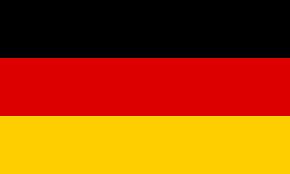

La Segunda Guerra Mundial
Principales Países del Caos
Alemania
Alemania no inició la Segunda Guerra Mundial, pero fue uno de los países que más contribuyó a su estallido...
Italia
Italia durante la Segunda Guerra Mundial fue un evento crucial que ayudó a poner fin a la guerra en Europa...
Japón
Japón desempeñó un papel fundamental durante la Segunda Guerra Mundial, expandiendo su territorio a través de Asia y el Pacífico...
.png)
Unión Soviética
La Unión Soviética tuvo una de las participaciones más extensas e influyentes del conflicto de la Segunda Guerra Mundial...
.png)
China
El Frente de China fue abierto por el Imperio de Japón al invadir Manchuria y luego el resto de China...
.png)
Estados Unidos
La entrada de Estados Unidos no tuvo lugar hasta muchos años después. Al principio, el país mantuvo una posición neutral...
.jpeg)
Reino Unido
El Reino Unido fue trascendental en la Segunda Guerra Mundial. Winston Churchill, su primer ministro, mantuvo una postura firme...
.png)
El 1 de septiembre de 1939, con la invasión alemana de Polonia, provocó la declaración de guerra de Reino Unido y Francia a Alemania.
Entre 1939 y 1945, participaron la mayor parte de las naciones del mundo, incluidas las grandes potencias.
¿Cuánta gente murió?
Se calcula que más de 80 millones de personas perdieron la vida.
Países con más víctimas
Unión Soviética: 26,6 millones de personas, 8,86 millones de soldados y 17,74 millones de civiles.
Alemania: Entre 4,5 y 10 millones de pérdidas humanas, 1,5 millones de civiles por bombardeos aliados.
China: Se estima entre 50 y 60 millones de fallecidos.
Japón: 1,2 millones de bajas entre sus soldados y 1 millón de civiles.